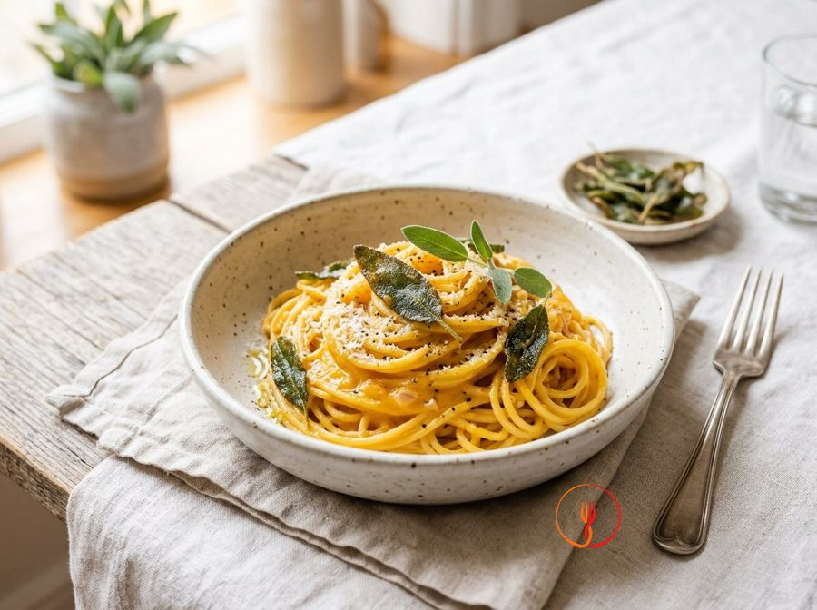

Wholemeal Pasta with Pumpkin Cream and Crispy Chickpeas
A nutritious main course using humble ingredients rich in fibre and plant-based protein. The sweetness of the pumpkin pairs perfectly with the texture of the pan-toasted chickpeas.
Ingredients
- Wholemeal pasta (such as fusilli)320 g
- Cleaned Mantuan pumpkin (a dense, sweet Italian winter squash)600 g
- Tinned pre-cooked chickpeas240 g
- Yellow onion1 pcs
- Extra virgin olive oil40 ml
- Fresh rosemary1 sprig
- Salt and pepperto taste
Allergens
Gluten
Method
- Cut the pumpkin into small cubes and finely slice the onion to speed up the cooking process.
- In a large frying pan, sauté half of the oil with the onion until it becomes translucent (about 5 minutes).
- Add the pumpkin, a pinch of salt, and a ladle of water; cover and cook for 15 minutes until the pumpkin is very tender.
- Meanwhile, drain the chickpeas, dry them well, and sauté them in another small pan with the remaining oil and the rosemary for 8-10 minutes until golden and crispy.
- Blitz the cooked pumpkin with a hand blender until you get a smooth cream; if it is too thick, add a little of the pasta cooking water.
- Cook the pasta in plenty of salted water following the package instructions for an 'al dente' texture.
- Drain the pasta, reserving a little water, pour it into the pumpkin cream, and toss vigorously with the heat off.
- Plate the pasta, topping each portion with a generous handful of crispy chickpeas and a dusting of black pepper.
Nutrition facts (estimate)
| Per serving (300 g) | Per 100 g | |
|---|---|---|
| Energy | 1862 kJ / 445.0 kcal | 620.7 kJ / 148.3 kcal |
| Protein | 16.0 g | 5.3 g |
| Carbohydrates | 68.0 g | 22.7 g |
| of which sugars | – g | – g |
| Fat | 12.0 g | 4.0 g |
| of which saturates | – g | – g |
| Fibre | – g | – g |
| Salt | – g | – g |
AI estimates based on average CREA / USDA data: indicative only, not a substitute for medical or dietitian advice.
Open the recipe in the app for the shopping list, ingredient sheets and nearby shops.
Related recipes

35 minSpaghetti with Pumpkin and Sage Cream💰 Save Euro · about €0.48 per person Campania · 70 minStuffed Paccheri Gratin with Pumpkin, Sausage and Provola🌿 Seasonal recipe
Campania · 70 minStuffed Paccheri Gratin with Pumpkin, Sausage and Provola🌿 Seasonal recipe 50 minSoft Pearl Barley with Pumpkin and Potato CreamKid-friendly💰 Save Euro · about €0.59 per person
50 minSoft Pearl Barley with Pumpkin and Potato CreamKid-friendly💰 Save Euro · about €0.59 per person 35 minCreamy pumpkin soup
35 minCreamy pumpkin soup